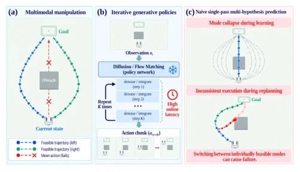
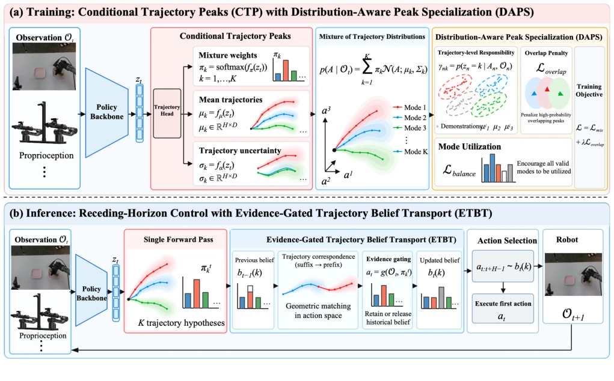
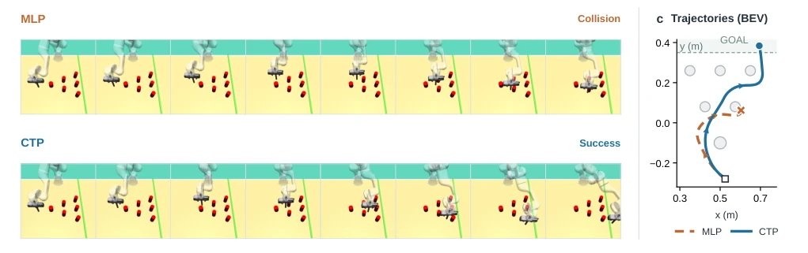
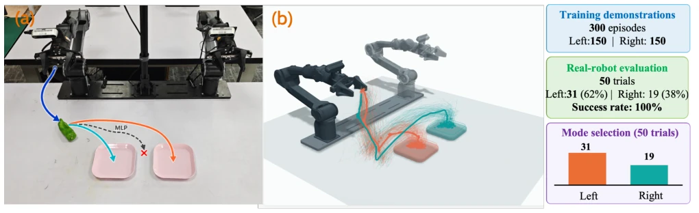
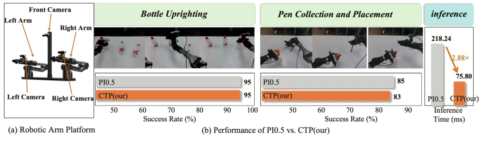

This paper delivers a single-point breakthrough on the 'multimodal' challenge in embodied intelligence. The authors did not follow the 'tedious' iterative generation route of diffusion models, but instead proposed a CTP framework, claiming to handle multimodal action prediction in a single forward pass. This sounds very appealing, after all, in robot control, latency is life. CTP solves 'mode collapse' (everyone looks alike) via DAPS, and uses ETBT to solve 'cross-chunk inconsistency' (choosing A one second, suddenly changing to B the next). The experimental data is indeed impressive, performing excellently on Push-T and LIBERO, with inference speed nearly 3 times faster than π0.5. However, we must temper enthusiasm: is this 'single-shot multimodal' truly robust in extremely complex dynamic environments? After all, it is easy to distribute probability mass to several 'peaks', but if the environment changes slightly, can these peaks withstand it? Additionally, although speed is improved, the model parameter size is larger than diffusion policies, does this count as another extreme of 'trading compute for time'? Overall, it is a very smart engineering attempt, but still far from 'general multimodal'.
Imitation learning in embodied intelligence faces a core contradiction: real-world tasks are often multimodal (one observation corresponds to multiple feasible futures), but traditional squared-error behavior cloning tends to predict the conditional mean, leading to unactionable actions during mode separation. Although Diffusion Policy [2] and Flow Matching [4] can model complex distributions, they rely on multiple iterations of denoising or numerical integration, leading to excessively high inference latency in high-frequency closed-loop control. Existing single-pass multi-hypothesis policies (such as IMLE Policy [6], PRISM [7]) achieve parallel generation, but lack specialized allocation for modes, prone to mode collapse (all candidates converge) early in training, and cause cross-chunk behavior inconsistency (Cross-chunk mode stitching) during replanning cycles due to permutation symmetry of candidate indices. This paper aims to solve this pain point: Can we generate diverse trajectory candidates while maintaining closed-loop execution consistency in a single forward pass (NFE=1)?

Fig. 1. Core challenges in multimodal closed-loop manipulation. (a) The same observation admits multiple feasible futures, while the conditional mean may be infeasible. (b) Diffusion and flow matching policies generate action chunks iteratively, increasing online decision latency. (c) Naive single-pass multi-candidate prediction can still suffer from mode collapse during training and inconsistent execution caused by mode switching during receding-horizon replanning.
The core of the CTP framework lies in combining trajectory-level conditional peak modeling with closed-loop consistency maintenance. The overall process is divided into two stages: training and inference. During training, the shared backbone network encodes the observation history once, and the trajectory head outputs K trajectory peaks (Trajectory Peaks) in parallel, each peak containing a center trajectory, probability mass (logits), and scale parameter (scale). During inference, peaks are selected and executed directly based on probability, without iterative sampling. There are two key innovations: First is DAPS (Distribution-Aware Peak Specialization), which utilizes trajectory-level posterior responsibilities and overlap constraints based on probability and scale to force high-probability peaks to cover different data modes, preventing mode collapse, without requiring preset clustering or fixed mode quotas. Second is ETBT (Evidence-Gated Trajectory Belief Transport), which solves behavioral continuity in replanning. It matches candidate trajectories from the previous cycle with candidates from the current cycle through geometric correspondence to construct historical behavioral beliefs. During decision-making, ETBT treats historical beliefs as soft priors and fuses them with current observation evidence; if current evidence is significantly stronger than historical or the correspondence is unreliable, historical constraints are released to avoid being locked by incorrect historical paths. This mechanism ensures behavioral smoothness and consistency across action chunks while maintaining multimodal diversity.

Fig. 2. Overview of CTP. (a) Training: the observation history passes through a shared policy backbone and trajectory head once to generate K trajectory peaks with probability masses and uncertainty. DAPS promotes mode specialization through trajectory-level responsibility assignment and inter-peak overlap constraints. (b) Inference: ETBT propagates historical behavioral beliefs through geometric correspondences between candidate trajectories in successive replanning cycles. Current policy evidence determines whether historical constraints are retained or released.
The authors conducted extensive validation on Push-T, D3IL (Avoiding, Aligning, Sorting-2), LIBERO, and real dual-arm robots. On Push-T, CTP surpassed Diffusion Policy-C (87.90%) and IMLE Policy (88.74%) with a coverage rate of 91.40%. In D3IL tasks, CTP achieved 100% success rate in the Avoiding task, outperforming BESO's 95%. On the LIBERO benchmark, CTP achieved an average success rate of 97.25%, comparable to Fast-WAM and Motus. The most eye-catching is the efficiency improvement: on LIBERO, CTP reduced policy call latency from 218.24ms of π0.5 to 75.80ms (2.88x acceleration), and successfully maintained dual-mode behavior in the dual-plate placement task in real experiments without mode collapse. Ablation studies confirmed that DAPS and ETBT contributed significant performance improvements respectively, proving the importance of multimodal representation and cross-chunk consistency.

Fig. 3. Qualitative comparison on D3IL Avoiding. The deterministic MLP trained with MSE (top) and full CTP (bottom) start from the same initial state. Each row presents eight frames spanning a complete rollout; the bird’s-eye view (BEV) shows the corresponding executed trajectories. In this example, the MLP collides with an obstacle, while CTP successfully reaches the goal.

Fig. 5. Placement into either of two plates. (a) The real-world setup. After grasping the target object, the robot may place it in either the left or right plate; both outcomes count as success. (b) Demonstration trajectories visualized in a 3D scene model. Orange and cyan trajectories correspond to the left- and right-plate placement modes, respectively. We collected 300 demonstration episodes, with 150 per mode, yielding a balanced, spatially separated bimodal trajectory distribution.

Fig. 6. Real-world bottle uprighting and pen placement experiments and comparative results. (a) Dual-arm robot platform and camera configuration. (b) Representative execution sequences, task success rates, and per-call policy inference latencies of π0.5 and CTP on the same NVIDIA RTX 4090 GPU.